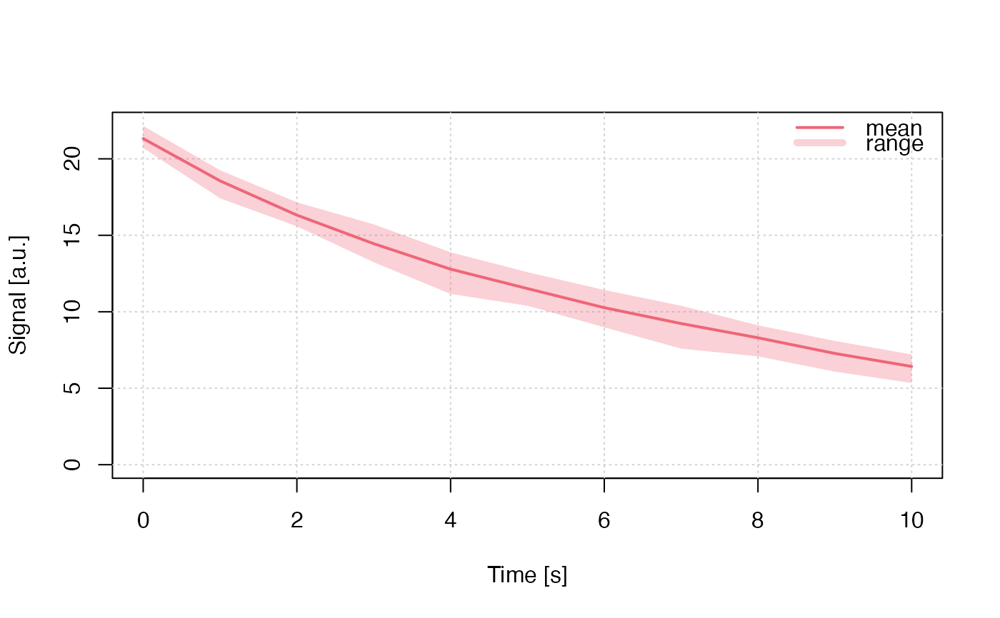

R/run_MC_CW_OSL_DELOC.R
run_MC_CW_OSL_DELOC.RdRuns a Monte-Carlo (MC) simulation of continuous wave optically stimulated luminescence (CW-OSL) using the one trap one recombination centre (OTOR) model. The term delocalized here refers to the involvement of the conduction band.
run_MC_CW_OSL_DELOC(
A,
times,
clusters = 10,
N_e = 200,
n_filled = N_e,
R,
method = "par",
output = "signal",
...
)numeric (required): The optical excitation rate from trap to conduction band (s^-1)
numeric (required): The sequence of temperature steps within the simulation (s)
numeric (with default): The number of created clusters for the MC runs. The input can be the output of create_ClusterSystem. In that case n_filled indicate absolute numbers of a system.
integer (with default): The total number of electron traps available (dimensionless). Can be a vector of length(clusters), shorter values are recycled.
integer (with default): The number of filled electron traps at the beginning
of the simulation (dimensionless). Can be a vector of length(clusters), shorter values are recycled.
numeric (required): The retrapping ratio for delocalized transitions (dimensionless)
character (with default): Sequential 'seq' or parallel 'par'processing. In
the parallel mode the function tries to run the simulation on multiple CPU cores (if available) with
a positive effect on the computation time.
character (with default): Output is either the 'signal' (the default) or
'remaining_e' (the remaining charges, electrons, in the trap)
further arguments, such as cores to control the number of used CPU cores or verbose to silence the terminal
This function returns an object of class RLumCarlo_Model_Output which
is a list consisting of an array with dimension length(times) x clusters
and a numeric time vector.
The model
$$ I_{DELOC}(t) = -dn/dt = A * (n^2 / (N*R + n(1-R))) $$
Where in the function:
t := time (s)
A := the optical excitation rate from trap to conduction band (1/s)
n := n_filled, the instantaneous number of electrons
N := N_e the available number of electron traps available
R := retrapping ratio for delocalized transitions
0.1.0
Kreutzer, S., 2022. run_MC_CW_OSL_DELOC(): Run Monte-Carlo Simulation for CW-OSL (delocalized transitions). Function version 0.1.0. In: Friedrich, J., Kreutzer, S., Pagonis, V., Schmidt, C., 2022. RLumCarlo: Monte-Carlo Methods for Simulating Luminescence Phenomena. R package version 0.1.8. https://CRAN.R-project.org/package=RLumCarlo
Pagonis, V., Friedrich, J., Discher, M., Müller-Kirschbaum, A., Schlosser, V., Kreutzer, S., Chen, R. and Schmidt, C., 2019. Excited state luminescence signals from a random distribution of defects: A new Monte Carlo simulation approach for feldspar. Journal of Luminescence 207, 266–272. doi: 10.1016/j.jlumin.2018.11.024
Further reading
Chen, R., McKeever, S.W.S., 1997. Theory of Thermoluminescence and Related Phenomena. WORLD SCIENTIFIC. doi: 10.1142/2781
## brief example
run_MC_CW_OSL_DELOC(
A = 0.12,
R = 0.1,
times = 0:10,
clusters = 10,
method = "seq") %>%
plot_RLumCarlo(legend = TRUE)

## A long example
if (FALSE) {
A <- c(0.1,0.3,0.5,1)
times <- seq(0, 60, 1)
s <- 1e12
E <- 1
R <- c(1e-7, 1e-6, 0.01, 0.1) # sequence of different R values
clusters <- 1000 # number of Monte Carlo simulations
N_e <- c(200, 500, 700, 400) # number of free electrons
n_filled <- c(200, 500, 100, 70) # number of filled traps
method <-"par"
output <- "signal"
col <- c(1,2,3,4) # ifferent colours for the individual curves
plot_uncertainty <- c(TRUE,FALSE,TRUE,FALSE) # do you want to see the uncertainty?
add_TF <- c(FALSE,rep(TRUE, (length(R)-1)))
## loop to plot different curves into one plot
for (u in 1:length(R)){
results <- run_MC_CW_OSL_DELOC(
A = A[u],
times,
clusters = clusters,
N_e = N_e[u],
n_filled = n_filled[u],
R = R[u],
method = method,
output = output)
plot_RLumCarlo(
results,
add = add_TF[u],
legend = FALSE,
col = col[u],
main = "Delocalised Transition")
}
# add your legend with your parameters
legend("topright",
ncol = 4,
cex = 0.55,
title = "parameters",
legend=c(
paste0("A = ", A),
paste0("n_filled = ", n_filled),
paste0("N_e = ", N_e),
paste0("R = ", R)),
bty = "n",
text.col = col)
}